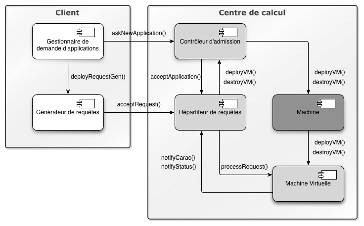
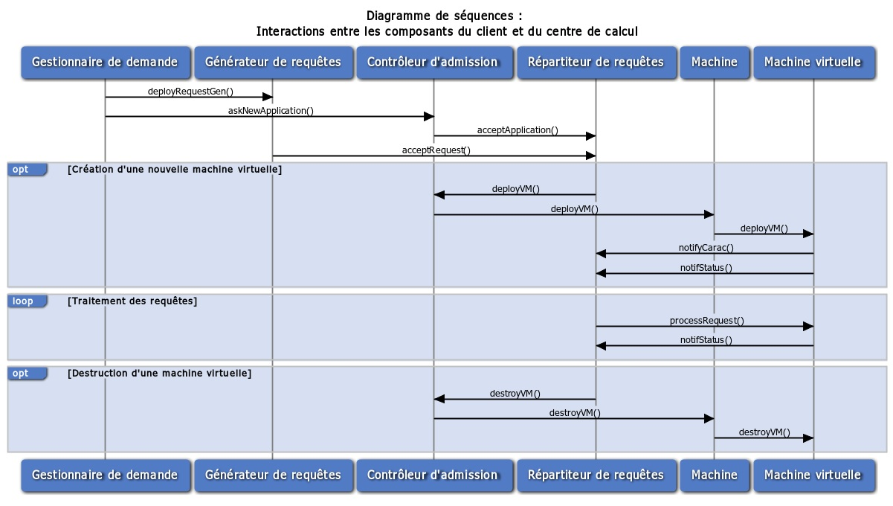

Ce package contient l'ensemble du code produit pour le projet du
centre de calcul de l'UE ALASCA.
Le projet à proprement parlé est divisé en deux parties :
- le client qui est composé d'un composant, le générateur
de requêtes (qui gère aussi la demande d'application); ce client
servira de test pour la demande d'application et l'envoi de requêtes
vers le centre de calcul.
- le centre de calcul qui est composé des entités suivantes :
- le contrôleur d'admission qui gère essentiellement
la demande de deploiement et/ou de destruction de machines
virtuelles par le dispatcher;
- le dispatcher qui gère la liste des répartiteurs
de requêtes;
- la machine qui s'occupe de la création et
destruction des machines virtuelles;
- la machine virtuelle qui traite les requêtes.
Le
contrôleur d'admission est le composant principal du centre de
calcul. Le
dispatcher est un sous-composant du
contrôleur mais ce n'est pas un composant en terme
d'implémentation. Les
répartiteurs de requêtes sont des composants générés à chaque
demande d'application. À chaque
répartiteur de requêtes sont rattachés la liste des
machines virtuelles qui traitent les requêtes reçus. Les
machines permettent quand à elles de créer la liaison entre un
répartiteur de requêtes et la
machine virtuelle déployée.
Les images ci-dessous présentent respectivement les différents
composants du centre de calcul et le diagramme de séquences de l'étape
de la demande d'application jusqu'au traitement de la requête.  